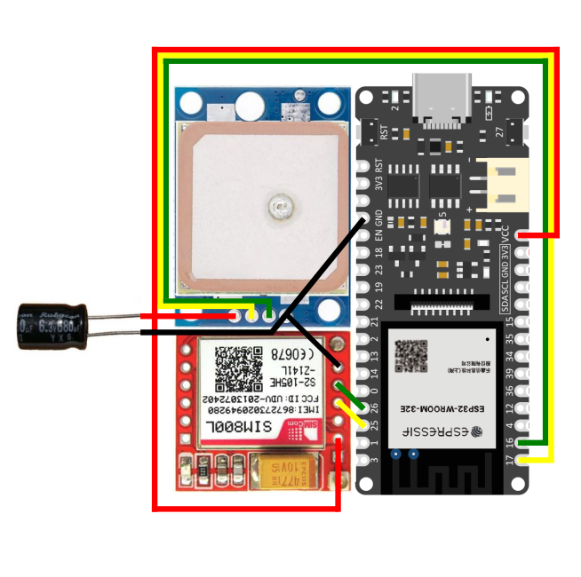

|
OpenVehicleLocator
dev
Tracker part
|
|
OpenVehicleLocator
dev
Tracker part
|
You want make your own tracker, your're in the good page !
Ensure you have all the needed electronic:
Please wire your electronic according to the following schematic :

We advise you to solder the wires to the components only after having tested the correct operation of the system
If you need more documention on electronic go one the Electronics page.
Caution Arduino IDE is mandatory to upload the code to the microcontroller. You also need to have everythig is reported on the Dependencies page.
Download all the tracker code on the github. You can do it with the following command :
Open the OVL-IoT.ino file with Arduino IDE and go on the config.h file.
The important points to edit are:
If you want to add the ChargingOnVehicle - Option, pass to true the DEFAULT_VEH_CHG_STS flag.
You can have more informations on the tracker configuration in the Configuring the tracker page.
After having edit the configuration file, you should upload the program to the microcontroller.
Plug the battery, and look at the RGB LED, if all is well, it should light up orange.
Go on the RGB LED debug codes to learn more about LED error codes.
If there is a problem, the LED should light up in red.